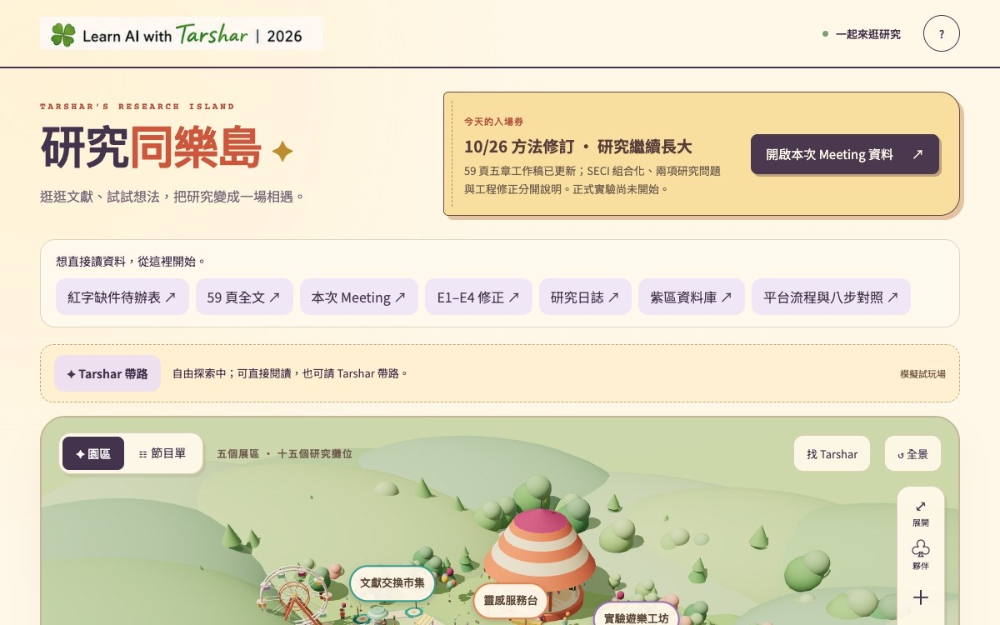
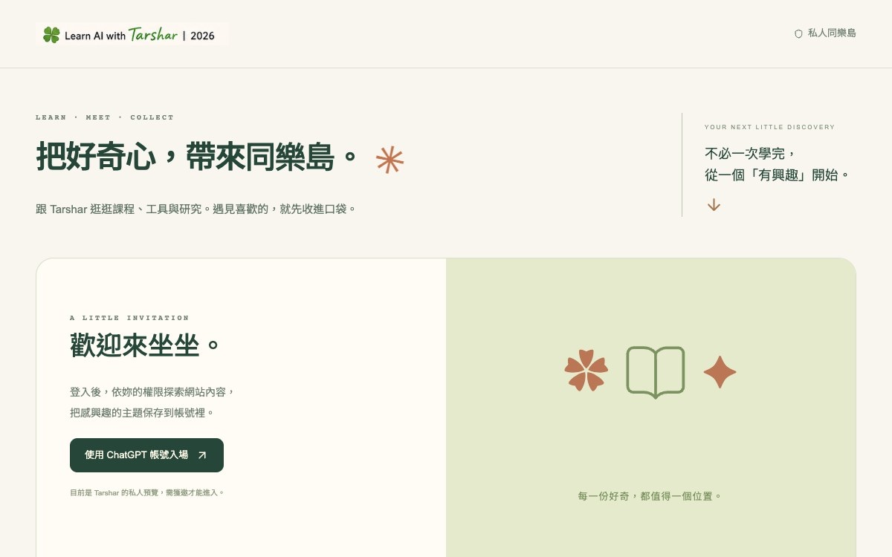

五區十五攤，承接研究方向、文獻、實驗、章節與討論。


小D版手冊｜AI 協作日誌 04
一個論文入口
如何長成兩座島
從散落的研究資料，到能走進去、能搜尋、能收藏，也能再次回來的知識空間
這冊怎麼讀
主角不是最後一次改名或調公仔，而是兩座島如何從一個論文入口開始，經過架構、退修、重做與驗證，逐步長成可以使用的成果。
證據範圍
2026-10-23～10-31 的需求、版本、測試與交班紀錄；不是只取最後一輪修改，也不把找不到的早期對話補寫成事實。
2026-10-23～10-31 的需求、版本、測試與交班紀錄；不是只取最後一輪修改，也不把找不到的早期對話補寫成事實。
資料不是沒有，是很難重新找到
一開始，我不是想做一座漂亮的島。我只是被自己的論文資料困住了。
文獻、A／B 研究比較實驗、第三章 Word 與 PDF、Meeting 資料、研究進度與三方交班散在不同地方。資料沒有消失，但每次用手機打開，我仍要重新想：現在做到哪裡？哪一份才是目前版本？下一步該從哪裡進去？
我看見智能島參考後，才冒出一個念頭：如果論文不是一排資料夾，而是一個可以走進去的空間呢？文獻、實驗、章節與討論各有位置，我打開手機，就能知道自己站在哪裡。
真正需求
不是「幫我做 3D 島」，而是「讓散落的研究工作重新有方向」。
不是「幫我做 3D 島」，而是「讓散落的研究工作重新有方向」。
這次的完整主線
我原本只想替散落的論文工作做一個手機入口；它先長成五區十五攤的研究園區，後來又把全站 299 個內容入口，長成第二座可以搜尋、收藏與回看的知識同樂島。
六區 299 個入口，處理分類、搜尋、收藏、權限與回看。
先決定什麼不能被畫錯
最早的構想是六座島。知臨依研究流程拆出研究方向、文獻、方法、實驗、章節與會議；茜茜看完後指出，方法與實驗其實是同一段工作，硬拆會讓入口變多，卻不一定更清楚。
我們最後收斂成五個功能區：研究方向、文獻、實驗、章節與討論。舊的綠區資料保留為歷史，但不放進紫區假裝成目前進度。
這一輪真正討論的是可信度
呈現方式
保留 3D 探索感，但一定要有文字清單。
保留 3D 探索感，但一定要有文字清單。
研究界線
3D 是入口，不是研究已完成的證據。
3D 是入口，不是研究已完成的證據。
資料安全
公開頁只讀允許欄位；私人實驗入口不跟著公開。
公開頁只讀允許欄位；私人實驗入口不跟著公開。
手機載不動 3D 時，資料不能一起消失；資料超過更新時間，要標示非即時。從這裡開始，它不再只是視覺作品，而是一個知道自己能力邊界的研究入口。
第一個能用的版本
茜茜負責 3D 場景；知臨負責資料、介面、路由、測試與整合。研究資料、區域名稱、模型對應與路線集中在同一份資料結構，場景讀它，清單也讀它。
五座研究島與 15 項資料可以點開；每項都有狀態、下一步、來源與工作入口；手機與桌面能讀；減少動態可以停走；3D 失敗仍能回到文字清單。35 項測試通過後，第一座島站起來了。
但是我一看就知道：它能用，卻還不是我的島。
不是換顏色，而是整座拆掉重做
第一版功能都對，卻太像當時流行的六角智能島模板。這不是改個顏色就能解決的事。
我不要只把資料卡放到五個幾何形狀上。我想走進去，看見每一個研究主題；還要能一路點下去，讀到來源、關係與下一步。更重要的是，不能因為換視覺，就把原本 15 項研究資料縮成幾棟裝飾建築。
五座分離的六角島被拆掉，換成一片連續草地：入口拱門、舞台、摩天輪、氣球、咖啡車、野餐空間與步道；五個研究功能則變成五個展區、十五個獨立攤位。
研究同樂島在這一輪真正成形：資料沒有因換風格而消失，空間則有了自己的世界觀。
探索被分成四層
- 全景先看五個研究區域。
- 走近展區，看見有哪些研究項目。
- 點攤位，鏡頭拉近到單一主題。
- 打開內容卡，繼續看狀態、來源、同區內容與關聯入口。
這次最重要的發現
視覺設計不是替資料加裝飾，而是在設計人怎麼理解資料。
視覺設計不是替資料加裝飾，而是在設計人怎麼理解資料。
從好看走到會用，再抽出方法
園區做好後，下一個問題是：第一次進來的人知道怎麼逛嗎？
我們反覆調整手機視角、完整區名、攤位入口、節目單與返回全景。曾有一版為了塞進手機，把五個區名縮成 01～05；我退回了，因為編號省下空間，卻把意義拿走。最後改成保留完整區名，再用版面與分層解決擁擠。
公仔、兩位教授與兩位同學沿 60 個節點路網行走，可以被找到、跟隨與暫停，但他們始終只是導覽角色，不能因為角色在走，就宣稱 AI 正在執行真實研究。
品牌校正放回正確位置
公仔、Logo 與髮型確實經過校正，但那是品牌資產保護，不是兩座島誕生的主因。真正讓研究同樂島可用的，是內容沒有在換風格時消失、手機仍能讀、每個攤位都回得到真實來源。
不複製外觀，抽出造島方法
比較其他智能島與七習慣島後，我們發現，讓人覺得「可以一直往下看」的不是摩天輪或黏土風，而是內容有層次：全景、區域、物件、詳細閱讀；每個節點還有來源、關係與下一個行動。
先訪談
用途、受眾與真正困境。
用途、受眾與真正困境。
再盤點
內容、固定資產、公開與登入邊界。
內容、固定資產、公開與登入邊界。
最後設計
世界長什麼樣、如何逐層探索。
世界長什麼樣、如何逐層探索。
299 個入口長成第二座島
我的網站已累積很多課程、直播課程筆記、工具、生活、研究與文章。和論文一樣，內容不是沒有，而是多到連我自己都不容易重新找到。
如果把 299 份內容全部搬進新網站，就會產生第二份正本；如果只做漂亮的分類首頁，又無法解決搜尋、收藏與回看。最後的做法是：內容留在原頁，知識同樂島只管理標準入口、分類、搜尋、收藏與權限。
| 類別 | 數量 | 類別 | 數量 |
|---|---|---|---|
| 課程 | 38 | 直播課程筆記 | 160 |
| 工具 | 25 | 生活 | 6 |
| 研究 | 46 | 文章 | 24 |
| 不重複標準入口合計 | 299 | ||
盤點 256 個公開 HTML、排除離線備援，再納入 Astro 頁面與 33 張文獻研讀卡。
第二座島可以搜尋、逐批瀏覽、開啟原始內容、收藏與取消收藏。同一帳號換裝置後仍能看見自己的收藏；擁有者只看整體熱門，不讀取別人的私人清單。
權限拆成兩層
誰能進整座網站，由分享設定管理；進站後能看哪些內容，才由內容角色管理。
誰能進整座網站，由分享設定管理；進站後能看哪些內容，才由內容角色管理。
驗證不是看起來可以
兩座島都刻意測了失敗會怎樣，而不是做完畫面就交付。
驗證 15 個唯一攤位、模型點選、手機詳情、減少動態、3D 失敗清單備援與原資料逐欄不變。
測重複收藏、取消、帳號隔離、撤權後殘留與儲存失敗是否假裝成功。
五組後端測試通過後，又在桌面與 390px 手機尺寸實測登入、搜尋、收藏、重整、取消與詳情。獨立審查另找出舞台碰撞、單區動線與權限 Email 競態，修正後才交付。
真正改變產品的取捨
方法與實驗屬同一段工作，避免入口過多。
保留 15 項資料，同時建立自己的世界觀。
保留探索感，也保護手機與失敗情境。
避免產生第二份內容正本。
一座公開研究、一座私人探索，權限不同。
名稱、髮型、公仔與「直播課程筆記」重要，但屬品牌保護與收尾校正，不是完整故事的主角。
每一棒都留下下一棒接得住的東西
提出真實困境、參考與偏好，在每個關鍵轉折做產品判斷與最終驗收。
對六島、2D／3D 風險提出判斷，參與場景、角色與園區重做。
盤點資料與邊界，完成介面、路由、搜尋、收藏、權限、測試、文件與發布。
規格、資料、程式與證據都要留下，不讓任何一方做成別人看不到的孤島。
我真正學到的三層能力
先盤點內容、來源、關係與行動，最後才決定用島、圖書館或園區呈現。
動畫不能冒充真實任務，公開入口不能順手打開私人資料，收藏不能只靠畫面變色。
不是把資料收得更深，而是讓我打開手機後能再次遇見它們。
研究界線
本案可作為人機協作中「使用者如何校正產品方向與知識入口」的案例素材。已完成的是網站與工程驗證，不能因此宣稱同樂島一定提升學習成效或搜尋效率；要形成研究證據，仍需任務設計、使用者資料、比較條件與評分方法。
成果狀態、限制與下一步
已確認
研究同樂島已完成五區十五攤、來源與工作入口、手機操作、帶路與文字備援；知識同樂島已完成六區、299 個標準入口、搜尋、帳號收藏、內容角色與管理者熱門統計。兩座島各有獨立網址、主網站入口、版本紀錄、測試證據與三方交班。
待驗證
- 瀏覽器手機尺寸測試不等於本人 iPhone Safari 的長時間效能與耗電驗收。
- 研究同樂島尚未接入自動更新的真實任務事件。
- 知識同樂島是固定索引快照，原站新增內容後仍要重新盤點與發布。
- 學習成效仍需真實使用資料回答。
下一個唯一行動
不是再堆更多裝飾，而是觀察真實使用：我最常從哪一區進去、哪些內容被收藏、哪一段導覽仍讓人迷路。這些行為，才會決定兩座島的下一次進化。
我原本只想替散落的論文工作做一個手機入口；它先長成一座能走進去的研究園區，接著又長出第二座可以搜尋、收藏、再回來探索的知識同樂島。